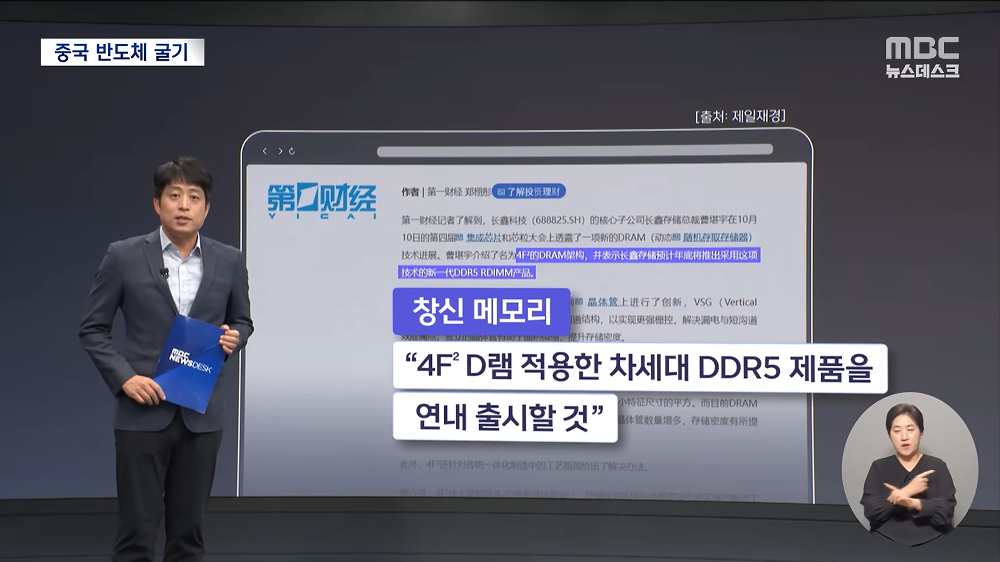
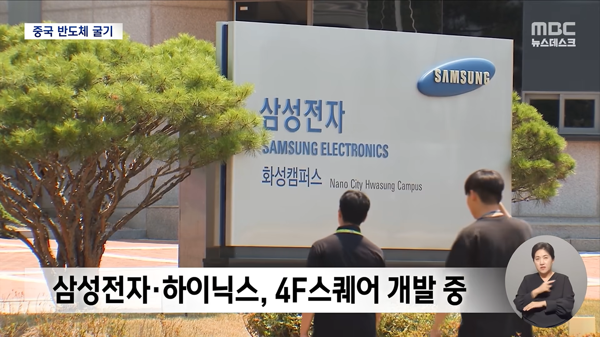
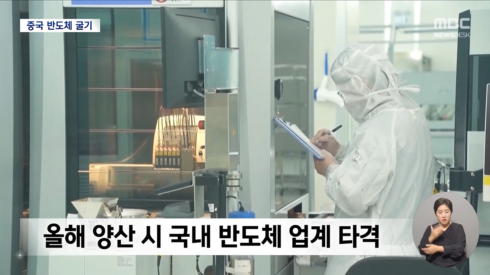
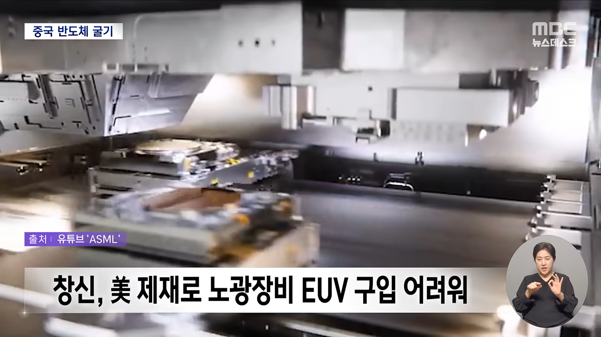
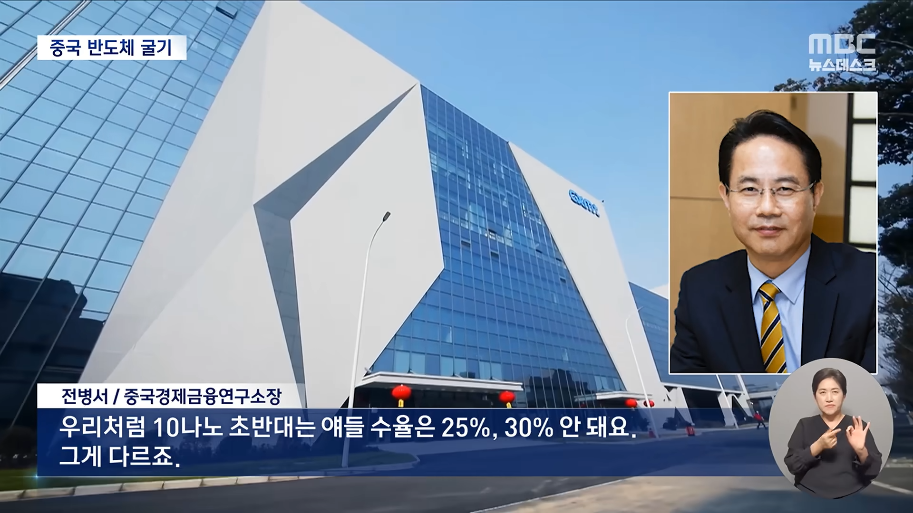
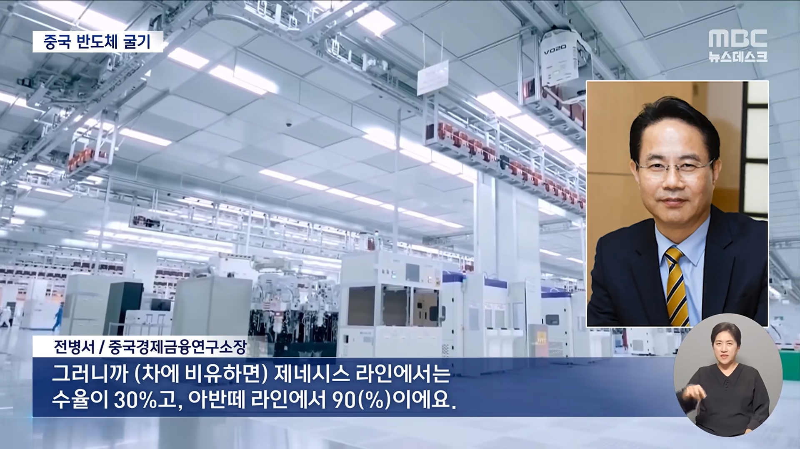

1. 중국 창신 메모리에서 신제품을 연내 출시한다고 발표함
2. 이는 삼전, 하닉 보다 빠른 출시임
3. 그러나 미국 제재로 노광장비 구매가 어렵고, 수율도 안나오고, 샘플 모델도 없이 그냥 발표만 한 거라 그럴 가능성은 낮다고 함
어제 창신메모리 주가 또한 같이 나락간 걸 보면 시장도 저 발표를 못 믿는 눈치임
결론은 저 이유 보다는
그동안 메모리 주가가 그동안 많이 올랐고
무엇보다 현재 고환율이라 외국인이 팔고 나가기 쉬운 환경이라고
나 주식 꽤나 오래했는데 솔직히 상승/하락 이유는 그냥 돈 많은놈 마음인거 같음.
맨날 떡상,떡락하고 그 뒤에 이유 갖다붙이기임.